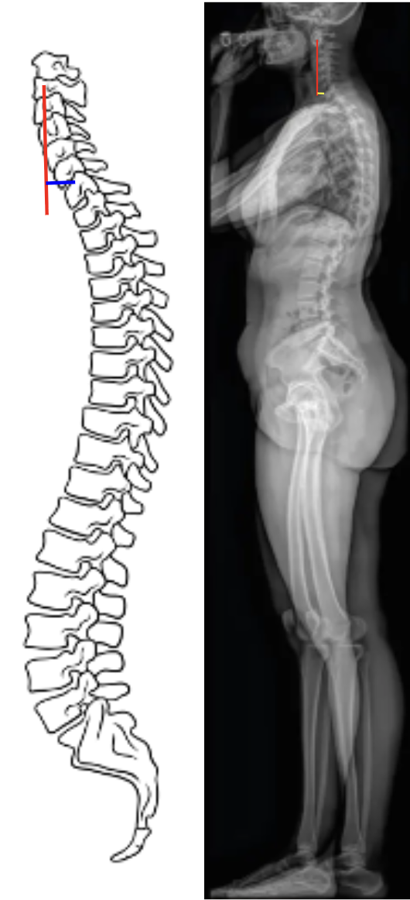

1) Description of Measurement
The C2–C7 Sagittal Vertical Axis (cSVA) quantifies the sagittal alignment of the cervical spine and represents the horizontal distance between the C2 plumb line and the C7 vertebral body on a standing lateral full-spine X-ray.
It provides insight into cervical sagittal balance and how the cervical spine contributes to overall sagittal alignment.
An increased cSVA indicates anterior translation of the head relative to the cervical spine, reflecting positive sagittal malalignment, often associated with forward head posture, cervical deformity, or compensatory changes to maintain horizontal gaze.
This measurement complements global sagittal balance parameters such as C7–S1 SVA and thoracic kyphosis and is critical for understanding regional-to-global alignment relationships.
2) Instructions to Measure
3) Normal vs. Pathologic Ranges
Key Point:
A cSVA > 40 mm is associated with increased Neck Disability Index (NDI) scores and clinical symptoms of sagittal imbalance (Tang et al., 2012).
4) Important References
Tang JA, Scheer JK, Smith JS, et al. The impact of standing regional cervical sagittal alignment on outcomes in posterior cervical fusion surgery. Neurosurgery. 2012;71(3):662–669.
Ames CP, Blondel B, Scheer JK, et al. Cervical radiographical alignment: comprehensive assessment techniques and potential importance in cervical myelopathy. Spine. 2013;38(22 Suppl 1):S149–160.
Scheer JK, Tang JA, Smith JS, et al; International Spine Study Group. Cervical spine alignment, sagittal deformity, and clinical implications: a review. J Neurosurg Spine. 2013 Aug;19(2):141-59. doi: 10.3171/2013.4.SPINE12838.
yer S, Nemani VM, Nguyen J, et al. Impact of Cervical Sagittal Alignment Parameters on Neck Disability. Spine (Phila Pa 1976). 2016 Mar;41(5):371-7. doi: 10.1097/BRS.0000000000001221.
Ye J, Rider SM, Lafage R, et al; International Spine Study Group (ISSG). Spinopelvic sagittal compensation in adult cervical deformity. J Neurosurg Spine. 2023 Mar 24;39(1):1-10. doi: 10.3171/2023.2.SPINE221295.
5) Other info....
C2–C7 SVA isolates the cervical spine’s contribution to overall sagittal alignment, distinct from the global C7–S1 SVA.
Increased cSVA correlates with worse functional outcomes and greater muscular fatigue from maintaining horizontal gaze.
C2–C7 SVA strongly correlates with T1 slope and C2–C7 lordosis; greater T1 slope often necessitates greater lordosis to maintain balance.
Restoration of physiological cSVA is a major goal in cervical deformity correction surgery.
Postoperatively, large positive cSVA is linked to loss of horizontal gaze, increased pain, and compensatory thoracic extension.
Consistent measurement technique (neutral posture, defined landmarks) is essential for accurate follow-up comparison.
Advanced modalities like EOS imaging and 3D reconstruction can further refine accuracy and assess coupled cervical-thoracolumbar relationships.